Жили-были старик со старухой.
Вот и говорит старик старухе:
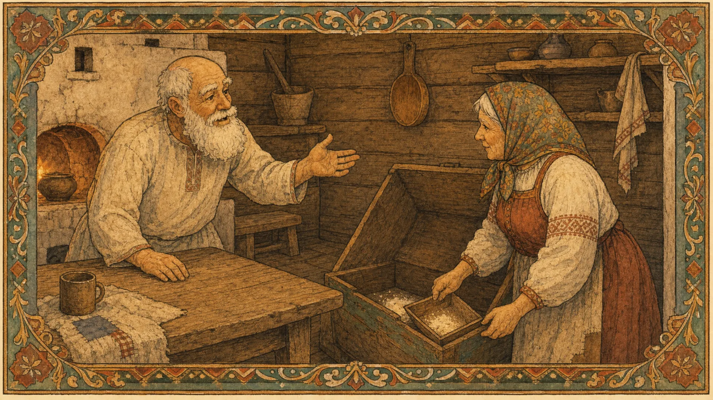
— Поди-ка, старуха, по коробу поскреби, по сусеку помети, не наскребёшь ли муки на колобок.
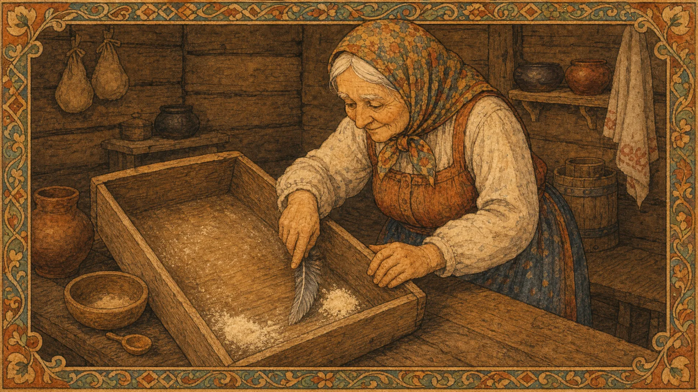
Взяла старуха крылышко, по коробу поскребла, по сусеку помела и наскребла муки горсти две.
Замесила муку на сметане, состряпала колобок, изжарила в масле и на окошко студить положила.
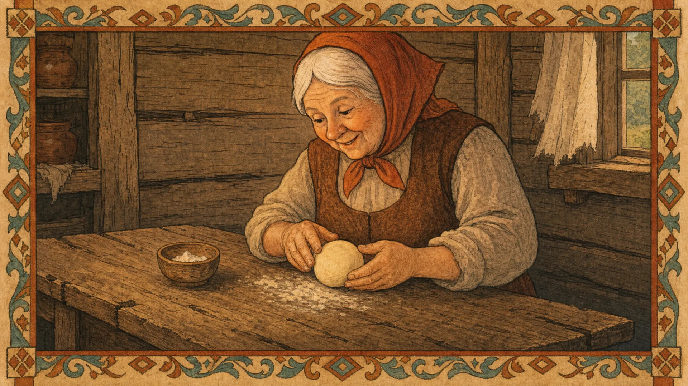
Колобок полежал, полежал, взял да и покатился — с окна на лавку, с лавки на пол, по полу к двери, прыг через порог — да в сени, из сеней на крыльцо, с крыльца на двор, со двора за ворота, дальше и дальше.
Катится Колобок по дороге, навстречу ему Заяц:
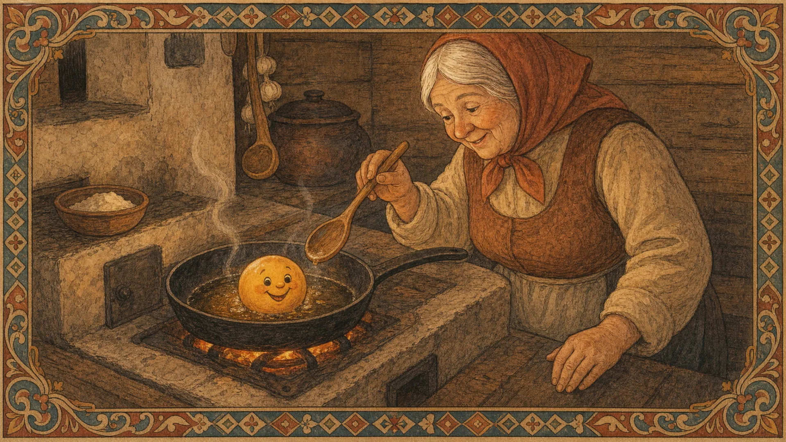
— Колобок, Колобок, я тебя съем!
— Не ешь меня, Заяц, я тебе песенку спою:
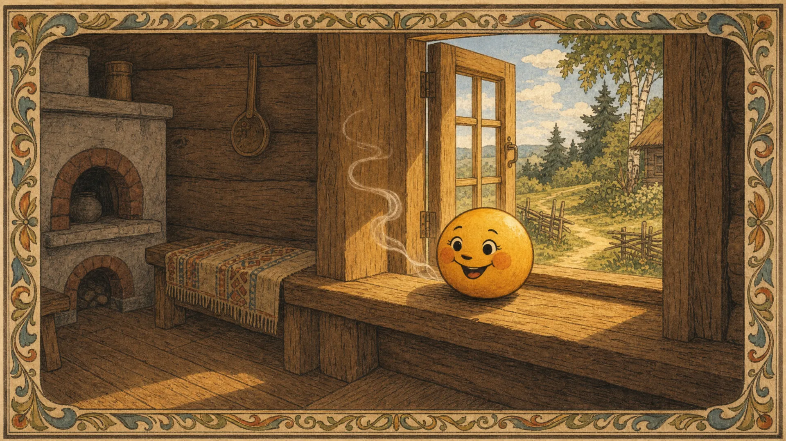
— Я Колобок, Колобок,
Я по коробу скребен,
По сусеку метен,
На сметане мешон
Да в масле пряжон,
На окошке стужон.
Я от дедушки ушел,
Я от бабушки ушел,
От тебя, зайца, подавно уйду!
И покатился по дороге — только Заяц его и видел!
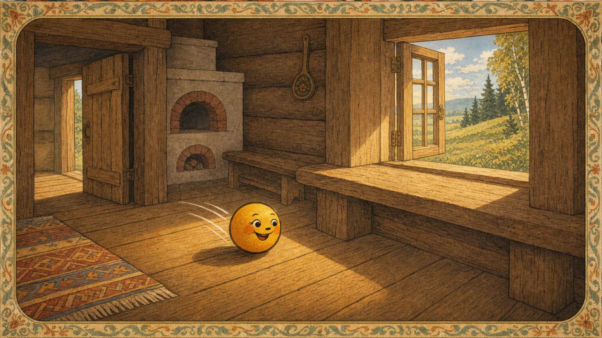
Катится Колобок, навстречу ему Волк:
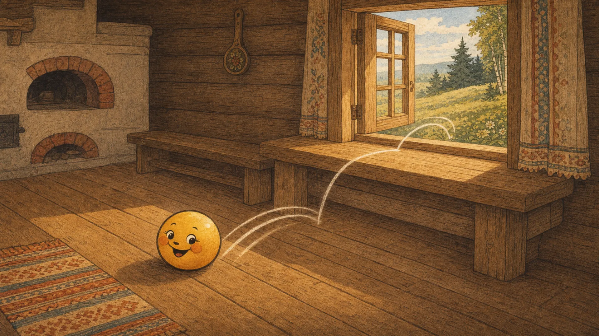
— Колобок, Колобок, я тебя съем!
— Не ешь меня, Серый Волк, я тебе песенку спою:
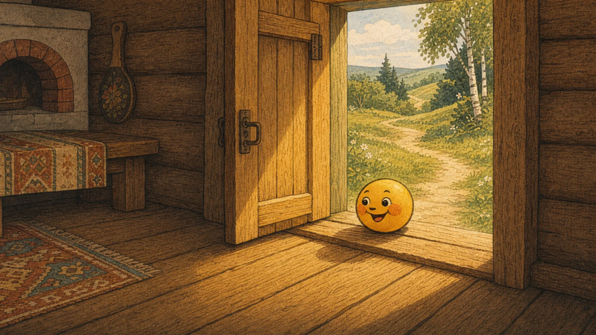
— Я Колобок, Колобок,
Я по коробу скребен,
По сусеку метен,
На сметане мешон
Да в масле пряжон,
На окошке стужон.
Я от дедушки ушел,
Я от бабушки ушел,
Я от зайца ушел,
От тебя, волк, подавно уйду!
И покатился по дороге — только Волк его и видел!
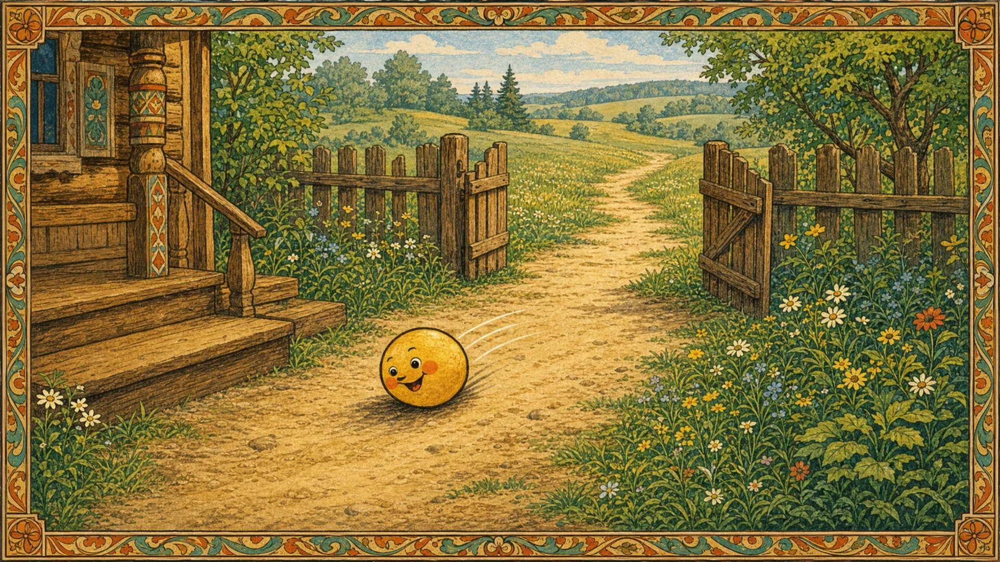
Катится Колобок, навстречу ему Медведь:
— Колобок, Колобок, я тебя съем!
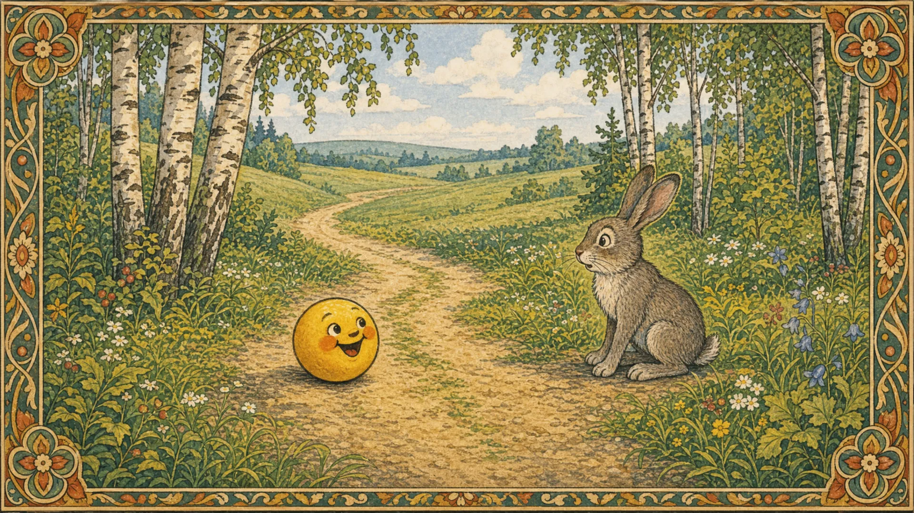
— Где тебе, косолапому, съесть меня!
— Я Колобок, Колобок, Я по коробу скребен, По сусеку метен, На сметане мешон Да в масле пряжон, На окошке стужон.
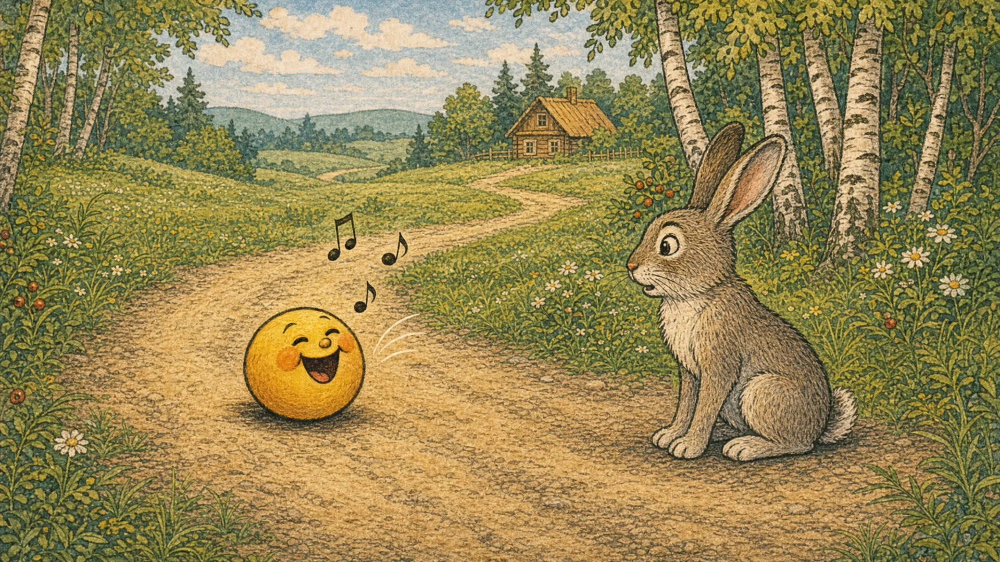
Я от дедушки ушел, Я от бабушки ушел, Я от зайца ушел, Я от волка ушел, От тебя, медведь, подавно уйду!
И опять покатился — только Медведь его и видел!
Катится Колобок, навстречу ему Лиса:
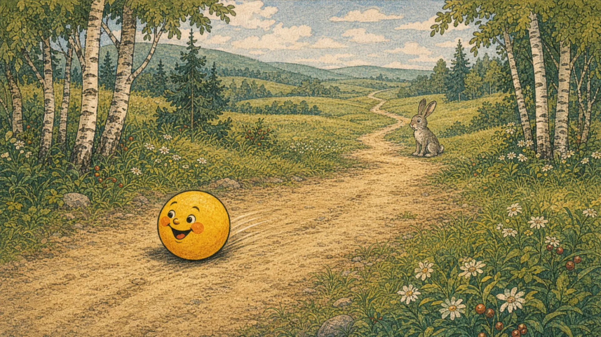
— Колобок, Колобок, куда катишься?
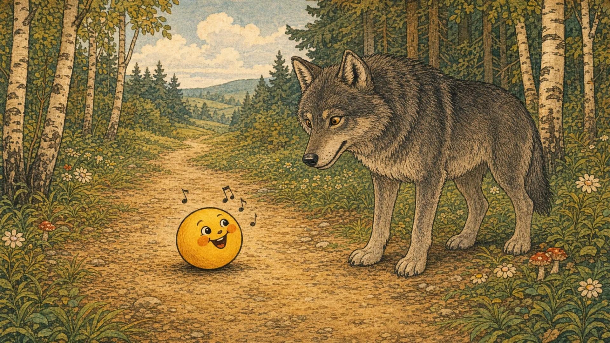
— Качусь по дорожке.
— Колобок, Колобок, спой мне песенку!
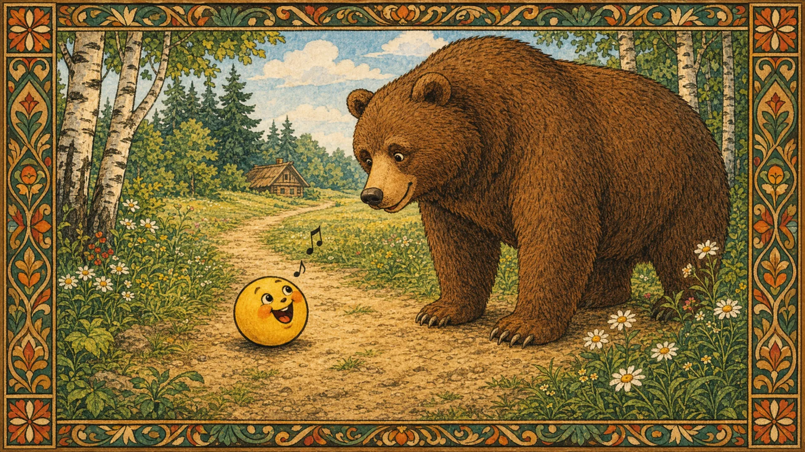
Колобок и запел:
— Я Колобок, Колобок, Я по коробу скребен, По сусеку метен, На сметане мешон Да в масле пряжон, На окошке стужон. Я от дедушки ушел, Я от бабушки ушел, Я от зайца ушел, Я от волка ушел, От медведя ушел, От тебя, лисы, нехитро уйти!
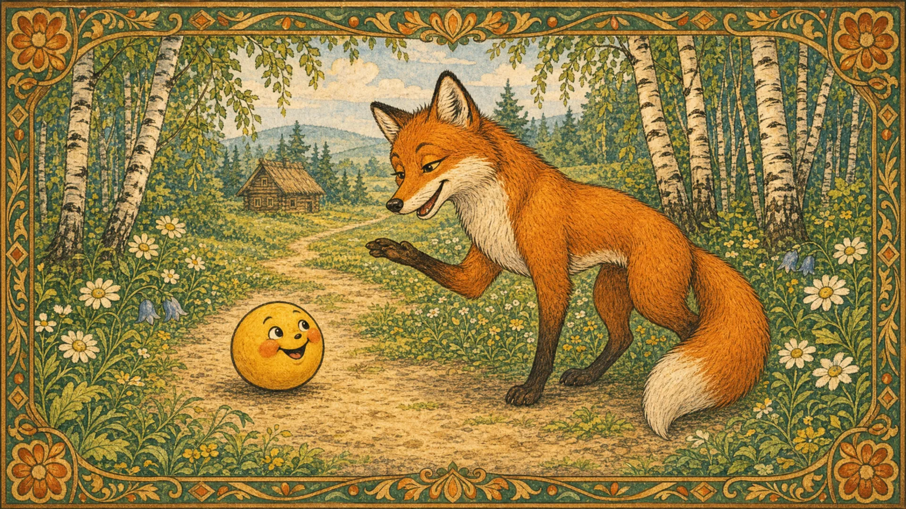
А Лиса говорит:
— Ах, песенка хороша, да слышу я плохо. Колобок, Колобок, сядь ко мне на носок да спой еще разок, погромче.
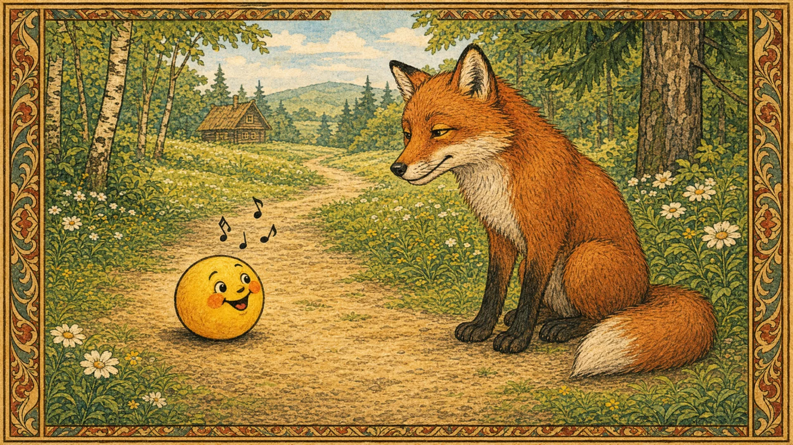
Колобок вскочил Лисе на нос и запел погромче ту же песенку.
А Лиса опять ему:
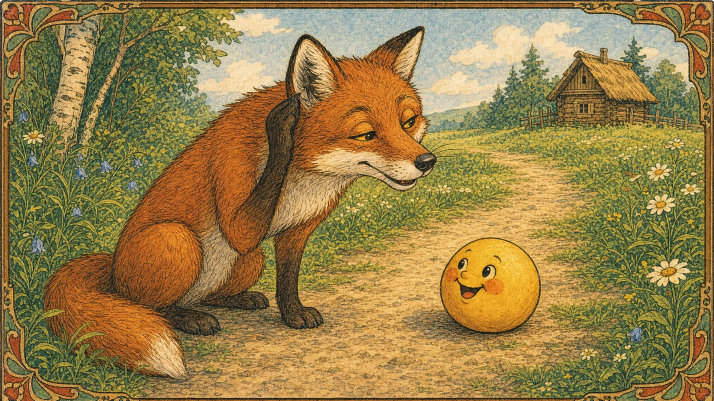
— Колобок, Колобок, сядь ко мне на язычок да пропой в последний разок.
Колобок прыг Лисе на язык, а Лиса его — гам! — и съела.
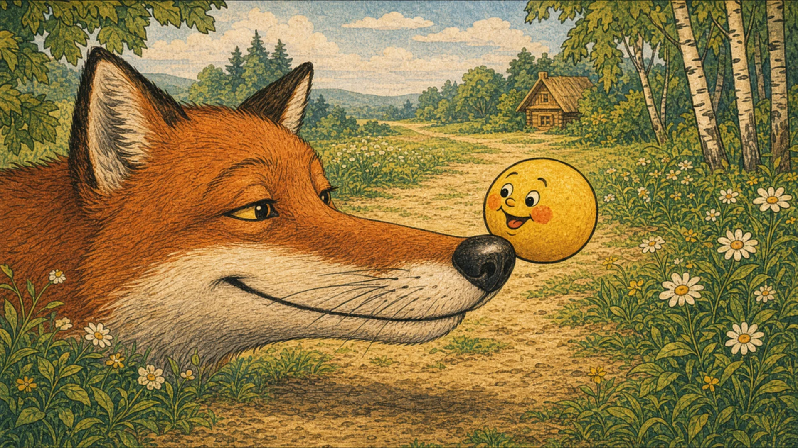